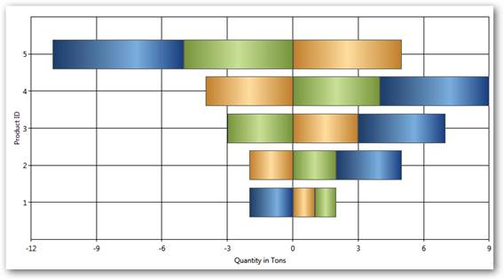
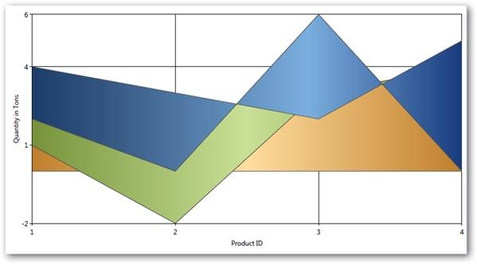
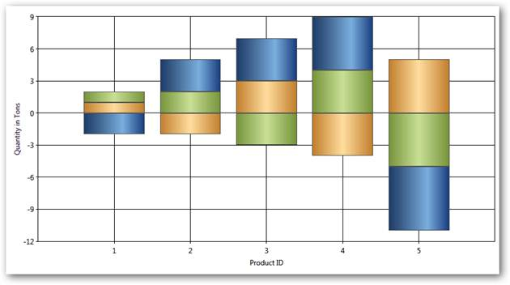

Stacking Charts are similar to regular charts except that the Y values stack on top of each other in the specified series order. Stacking charts help visualize data that is a sum of parts, each of which is in a series.
There are different types of stacking charts:
Fast Stacking Column charts are similar to Stacked-column charts with y-coordinate values stacked over one another, in series order allowing the chart data to be visualized as sum of series parts. The following points mark the advantages of Fast Stacking Column over Stacked-column charts:
· The Fast Stacking Column charts are rendered using drawing visuals.
· They load faster than the Stacked-column charts.
· They ensure high performance for displaying data.
· They can be used as real time charts to render huge number of data points.
The Fast Stacking Column chart is added in the Enum of type ChartTypes.
Data Requirements
Table 120: Data Requirement
|
Details | |
|
Number of y values per point |
one |
|
Number of points |
one or more |
|
Number of series |
one or more |
Custom StackingColumn100 Properties
Table 121: Properties
|
Name |
Type |
Container |
Description |
|
ChartStackingColumn100Type.ShowValueAsProbability |
bool |
Chart Area |
The y-axis range is set between 0 and 100 If true, the y-axis range is set between 0 and 1. Default value is false. |
Template
While setting template the following parameters can be used:
Table 122: Template Parameter
|
Name |
Type |
Description |
|
X |
double |
x column coordinate |
|
Y |
double |
y column coordinate |
|
Width |
double |
column width |
|
Height |
double |
column height |
|
Interior |
Brush |
column color |
|
IsUpper |
boolean |
true–if this is upper column |
|
IsLower |
boolean |
true–if this is lower column |
|
Series |
ChartSeries |
reference to series-owner |
The following code snippet illustrates the usage of Fast Stacking Column charts.
|
[XAML]
<syncfusion:ChartSeries Type="FastStackingColumn" Name="series1" Stroke="Black" DataSource="{Binding}"/> |
|
[C#]
ChartSeries series = new ChartSeries(); series.Type = ChartTypes.FastStackingColumn; |
Run the sample.
A Fast Stacking Column chart is displayed pertaining to the data source it is bound to.
Figure 158: Fast Stacking Column Chart
A sample which demonstrates Fast Stacking Column Chart Types is available in the following sample installation path.
..My Documents\Syncfusion\Essential Studio\<Version Number>\WPF\Chart.WPF\Samples\3.5\WindowsSamples\Chart Performance\Fast chart types
Support ahs been provided for stacking positive and negative values in stacking chart types. Calculation logic must be the same and it has to adhere to the general standards of stacking chart type.
Chart types are:
· Stacking Column
· Stacking Bar
· Stacking Area

Figure 159: Stacking Bar

Figure 160: Stacking Area

Figure 161: StackingColumn
Properties
|
Property |
Description |
Type |
Value it accepts |
Any other dependencies/sub properties associated |
|
RequiresNegativeSeriesStack |
Specifies whether the positive and negative series should be stacked seperately. |
Bool |
True/False |
NA |